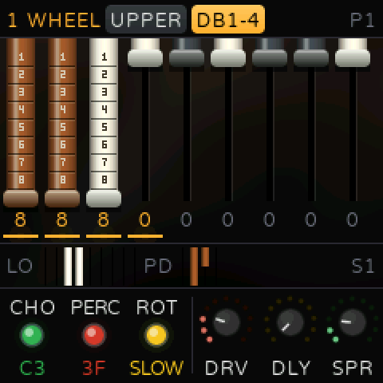

A three-manual organ and a MIDI router for the M-VAVE FM-1.
| Sound | 84 free-running tone generators (C1–B7): every key sounds, no voice stealing. 16 models in 3 departments: eight vintage and combo organs, four pipe organs from four centuries, four accordions |
| Manuals | Upper (9 drawbars), Lower (9 drawbars), Pedal (4 stops). Coupler II/I, split and auto-pedal by MIDI zones |
| Effects | Per manual: drive, scanner vibrato / chorus or tremulant, rotary on / off, delay and reverb sends. Shared: percussion, two-rotor rotary, stereo ping-pong delay (to 1 s), 4 reverbs (spring, stage, hall, cathedral), an insert slot (7 effects), master EQ and compressor |
| Memory | 16 performance setups (the whole instrument, one per white key); a drawbar list of 75 registrations + 16 user slots; all kept after power-off; backup over USB |
| MIDI | 3 zones (in / out channel, key range, transpose, velocity, filters), cloner, 9-channel harmonic mapper, chord memory, a 16-channel mixer (CC 7), Yamaha SEQTRAK control (YST) |
| SELECT | the manual (and its MIDI zone): UPPER LOWER PEDAL | ALGORITHM | the model 1–16 |
| PRESETS | the drawbar list of that manual | MASTER | the output volume |
SEL is the knobs' push. The FM-1's knobs can't be pressed, so a held SEL gives every knob and most buttons a second job.
Top row and bottom row as on the panel. Below the dashed line: with SEL held. OCT− OCT+: the keys' octave, −2 … +3.
| SEL + white key | recall performance setup 1–16 (F3 to G5) |
| SAVE held + white key | store the whole instrument there |
| SEL + HOME | panic: all notes off, inside and on all 16 channels |
| SEL + GLO | panel lights: keys and buttons OFF / DIM / FULL; SEQ there: backup |
| SEL + KNOB 1–4 | the screen's second row (shared values on FX) |
| SEL + FX | the insert effect; again: the master EQ and compressor |
| any key or button | skips the welcome screen |
| Knob | Turn: the manual's | SEL + turn: shared |
|---|---|---|
| KNOB 1 | drive | the model's character knob |
| KNOB 2 | vibrato & chorus or tremulant | delay feedback |
| KNOB 3 | delay send | delay time 20–1000 ms |
| KNOB 4 | reverb send | reverb room |
A row per manual; ENV LFO ARP choose upper, lower, pedal. SEQ: the manual through the rotary or past it.

| 1 WHEEL | Tonewheel: click, percussion | 9 BAROQ | Baroque: clear, chiff, Werckmeister |
| 2 BRIT | Brit Combo: hollow divider tone | 10 CATH | Cathedral: French, swell box |
| 3 ITALO | Italo Combo: saw / pulse bite | 11 RENAI | Renaissance: ripieno, meantone |
| 4 TOKYO | Tokyo Combo: round transistor | 12 ROMAN | Romantic: dark, crescendo roller |
| 5 OSAKA | Osaka King: hollow, soft | 13 MUSET | Paris Musette: wet, three reeds |
| 6 CASTL | Il Castellano: snarl, TONE | 14 BANDO | Tango Bandoneon: dry, dark |
| 7 DUTCH | Dutch Rock: valve AMP | 15 TROSS | Trossingen: dry, bass side |
| 8 PLAY | Playroom: toy organ, FAN | 16 STEIR | Steirische: wet, helicon bass |
Changing the model keeps the effects and the drawbars; PRESETS picks a registration (the pipe organs have their own lists). FX, SEL + KNOB 1: the model's character knob.
The white keys F3 … G5 are setups 1–16, left to right.
Each manual has a zone: it listens on a MIDI channel (factory 1 upper, 2 lower, 3 pedal), takes the notes in its key range, plays its manual and sends them on to your synths. GLO steps through five screens, SELECT chooses the zone, HOME goes back.
| Screen | Knobs | Buttons |
|---|---|---|
| ZONE | in channel · lowest key · transpose · fixed velocity SEL: out channel · highest key · octave · BEND | ENV VEL · LFO CC filter · EDIT PC filter · ARP INT sound · SEQ learn the range SEL: EXPR · THRU · USB/TRS · K:FL/K:ZN · AUTO pedal |
| CLONE | channel · its octave | ENV on; keys 1–16 switch channels 1–16 |
| HARMONIC | first channel · VEL or CC7/CC11 | ENV on; keys 1–9 switch the nine footages |
| CHORD | — | hold a chord, LFO captures it, ENV on, EDIT clears |
| YST | the SEQTRAK track's cutoff, resonance, attack, decay | ENV on; SELECT the track, PRESETS its sound, LFO read again |
OrGigs is at heart a firmware for the M-VAVE SMK-37 Elite, and this is its compact edition. The full version adds your own rotary cabinets, a full mixer, an expression pedal and five pad layouts. Check it out.
All product names are trademarks of their owners and are used only to identify compatible devices. OrGigs is not affiliated with them.